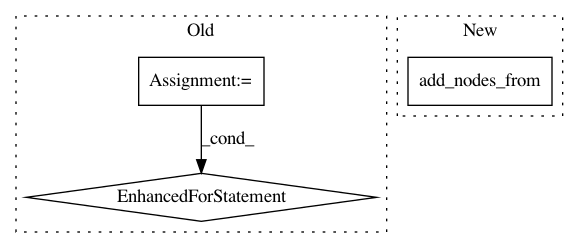

306ac2dce98f1faecba55418dbcd957fadde460e,pgmpy/readwrite/BIF.py,BIFReader,get_model,#BIFReader#,304
Before Change
tabular_cpds = []
count_dict={}
for var in self.variable_edges:
for var1 in var:
if count_dict.get(var1, 0) == 0:
values = self.variable_cpds[var1]
cpd = TabularCPD(var1, len(self.variable_states[var1]), values,
evidence = self.variable_parents[var1],
evidence_card = [len(self.variable_states[evidence_var])
for evidence_var in self.variable_parents[var1]])
count_dict[var1] = 1
tabular_cpds.append(cpd)
model.add_cpds(*tabular_cpds)
for node, properties in self.variable_properties.items():
for prop in properties:
prop_name, prop_value = map(lambda t: t.strip(), prop.split("="))
After Change
try:
model = BayesianModel(self.variable_edges)
model.name = self.network_name
model.add_nodes_from(self.variable_names)
tabular_cpds = []
for var, values in self.variable_cpds.items():
cpd = TabularCPD(var, len(self.variable_states[var]), values,
In pattern: SUPERPATTERN
Frequency: 3
Non-data size: 3
Instances
Project Name: pgmpy/pgmpy
Commit Name: 306ac2dce98f1faecba55418dbcd957fadde460e
Time: 2015-11-13
Author: utkarsh.gupta550@gmail.com
File Name: pgmpy/readwrite/BIF.py
Class Name: BIFReader
Method Name: get_model
Project Name: pgmpy/pgmpy
Commit Name: 8bf1fc92d6660b92d2ffb4c1f1a588f38f034372
Time: 2020-06-13
Author: ankurankan@gmail.com
File Name: pgmpy/models/MarkovModel.py
Class Name: MarkovModel
Method Name: to_bayesian_model
Project Name: epfl-lts2/pygsp
Commit Name: 91e641a8fa7a4e408b3b34fd8223bb278d8f2f47
Time: 2019-03-20
Author: michael.defferrard@epfl.ch
File Name: pygsp/tests/test_graphs.py
Class Name: TestImportExport
Method Name: test_networkx_signal_import